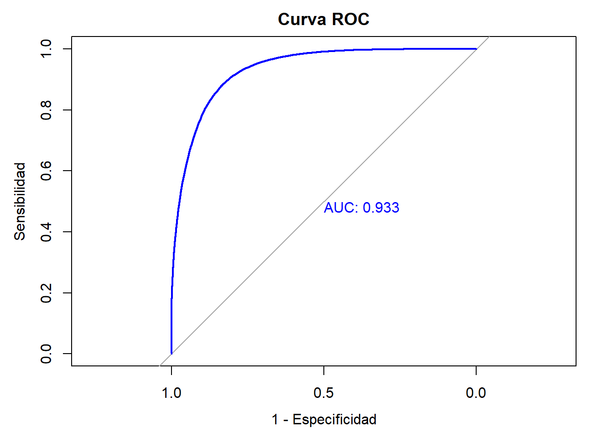

Capítulo 3 Modelo de Regresión Logística
Como se ha señalado anteriormente, la variable respuesta de este modelo será la variable formalidad con niveles 1 para formal y 0 para informal
Es importante aclarar que los resultados que se muestran a continuación se estimaron después de la eliminación de algunas variables que causaban multicolinealidad en el modelo (Ver Prueba de VIF)
library(data.table)
datos_winsor <- fread("C:/Users/moisesdp/Documents/Trabajo de profundizacion/datos_winsor.csv")
modelo <- glm(formalidad ~ CLASE + Sexo + Edad +
`Parentesco con jefe de hogar` + `¿Usted se reconoce como?` +
`Estado civil` + `¿Afiliado, cotizante o beneficiario de seguridad social en salud?` + `Mayor nivel educativo alcanzado` +
`Para la ocupación que desempeña, ¿tiene algún tipo de contrato` +
`¿Cuánto tiempo lleva en esta empresa trabajando de forma continua (meses)?` +
`Tipo de ocupación` +
`El mes pasado, ¿recibió pagos por concepto de arriendos o pensiones?` +
`¿Es propietario de una o varias propiedades inmuebles?` +
`Tipo de vivienda` + `¿Tiene servicio de energía eléctrica?` +
`Estrato para tarifa` + `Número de hogares en la vivienda` +
`Número de cuartos` + `La vivienda ocupada por este hogar es` +
`Total de personas en el hogar` + AREA +
`Meses que estuvo sin empleo entre su trabajo actual y el anterior` +
`Tiempo de desplazamiento hasta su sitio de trabajo`,
data = datos_winsor, family = binomial(link = "logit"))| Observations | 353672 |
| Dependent variable | formalidad |
| Type | Generalized linear model |
| Family | binomial |
| Link | logit |
| χ²(92) | 253281.083 |
| p | 0.000 |
| Pseudo-R² (Cragg-Uhler) | 0.685 |
| Pseudo-R² (McFadden) | 0.522 |
| AIC | 232152.551 |
| BIC | 233154.731 |
| exp(Est.) | 2.5% | 97.5% | z val. | p | |
|---|---|---|---|---|---|
| (Intercept) | 0.000 | 0.000 | 0.000 | -24.787 | 0.000 |
| CLASEUrbano | 1.186 | 1.140 | 1.234 | 8.470 | 0.000 |
| SexoMujer | 0.738 | 0.721 | 0.755 | -25.711 | 0.000 |
| Edad | 1.008 | 1.007 | 1.009 | 13.622 | 0.000 |
Parentesco con jefe de hogarHijo(a), hijastro(a)
|
1.125 | 1.044 | 1.213 | 3.091 | 0.002 |
Parentesco con jefe de hogarJefe(a) del hogar
|
1.397 | 1.295 | 1.506 | 8.709 | 0.000 |
Parentesco con jefe de hogarNieto(a)
|
0.879 | 0.736 | 1.050 | -1.421 | 0.155 |
Parentesco con jefe de hogarOtro no pariente
|
1.059 | 0.967 | 1.159 | 1.238 | 0.216 |
Parentesco con jefe de hogarOtro pariente
|
1.029 | 0.753 | 1.405 | 0.177 | 0.859 |
Parentesco con jefe de hogarPareja, esposo(a), cónyuge, compañero(a)
|
1.204 | 1.111 | 1.305 | 4.540 | 0.000 |
Parentesco con jefe de hogarPensionista
|
1.161 | 1.041 | 1.295 | 2.686 | 0.007 |
Parentesco con jefe de hogarTrabajador
|
0.731 | 0.655 | 0.816 | -5.619 | 0.000 |
¿Usted se reconoce como?Indígena
|
1.299 | 0.617 | 2.736 | 0.689 | 0.491 |
¿Usted se reconoce como?Negro (a), mulato (a) (afrodescendiente), afrocolombiano(a)
|
1.287 | 0.612 | 2.705 | 0.665 | 0.506 |
¿Usted se reconoce como?Ninguno de los anteriores
|
1.488 | 0.709 | 3.126 | 1.051 | 0.293 |
¿Usted se reconoce como?Palenquero (a) de San Basilio
|
1.534 | 0.607 | 3.876 | 0.905 | 0.365 |
¿Usted se reconoce como?Raizal del archipiélago de San Andrés, Providencia y Santa Catalina
|
6.143 | 2.818 | 13.389 | 4.566 | 0.000 |
Estado civilEsta separado (a) o divorciado (a)
|
0.653 | 0.627 | 0.680 | -20.563 | 0.000 |
Estado civilEsta soltero (a)
|
0.654 | 0.628 | 0.682 | -20.108 | 0.000 |
Estado civilEsta viudo (a)
|
0.452 | 0.415 | 0.493 | -17.896 | 0.000 |
Estado civilNo esta casado (a) y vive en pareja hace dos años o más
|
0.926 | 0.897 | 0.956 | -4.694 | 0.000 |
Estado civilNo esta casado(a) y vive en pareja hace menos de dos años
|
0.781 | 0.730 | 0.836 | -7.115 | 0.000 |
¿Afiliado, cotizante o beneficiario de seguridad social en salud?No sabe, no informa
|
13.369 | 3.484 | 51.302 | 3.779 | 0.000 |
¿Afiliado, cotizante o beneficiario de seguridad social en salud?Sí
|
1228.533 | 708.307 | 2130.845 | 25.318 | 0.000 |
Mayor nivel educativo alcanzadoBásica secundaria
|
1.208 | 1.156 | 1.263 | 8.346 | 0.000 |
Mayor nivel educativo alcanzadoDoctorado
|
25.646 | 15.515 | 42.393 | 12.653 | 0.000 |
Mayor nivel educativo alcanzadoEspecialización
|
42.093 | 38.371 | 46.176 | 79.173 | 0.000 |
Mayor nivel educativo alcanzadoMaestría
|
44.546 | 37.961 | 52.273 | 46.518 | 0.000 |
Mayor nivel educativo alcanzadoMedia académica
|
2.919 | 2.818 | 3.025 | 59.346 | 0.000 |
Mayor nivel educativo alcanzadoMedia técnica
|
4.127 | 3.862 | 4.410 | 41.926 | 0.000 |
Mayor nivel educativo alcanzadoNinguno
|
0.499 | 0.447 | 0.556 | -12.496 | 0.000 |
Mayor nivel educativo alcanzadoNo sabe, no informa
|
1.748 | 0.129 | 23.652 | 0.420 | 0.674 |
Mayor nivel educativo alcanzadoNormalista
|
5.080 | 3.891 | 6.632 | 11.950 | 0.000 |
Mayor nivel educativo alcanzadoPreescolar
|
0.000 | 0.000 | 113686124823796995064668.000 | -0.297 | 0.766 |
Mayor nivel educativo alcanzadoTécnica profesional
|
7.500 | 7.165 | 7.852 | 86.212 | 0.000 |
Mayor nivel educativo alcanzadoTecnológica
|
8.810 | 8.303 | 9.349 | 71.882 | 0.000 |
Mayor nivel educativo alcanzadoUniversitaria
|
11.372 | 10.877 | 11.889 | 107.161 | 0.000 |
Para la ocupación que desempeña, ¿tiene algún tipo de contratoSí
|
15.211 | 14.597 | 15.850 | 129.542 | 0.000 |
¿Cuánto tiempo lleva en esta empresa trabajando de forma continua (meses)?
|
1.002 | 1.001 | 1.002 | 22.152 | 0.000 |
Tipo de ocupaciónJornalero o peón
|
0.023 | 0.003 | 0.174 | -3.659 | 0.000 |
Tipo de ocupaciónObrero o empleado de empresa particular
|
8.249 | 7.769 | 8.758 | 68.978 | 0.000 |
Tipo de ocupaciónObrero o empleado del gobierno
|
3174.884 | 1509.358 | 6678.262 | 21.253 | 0.000 |
Tipo de ocupaciónPatrón o empleador
|
9.361 | 8.551 | 10.248 | 48.437 | 0.000 |
Tipo de ocupaciónTrabajador familiar sin remuneración
|
2.084 | 1.792 | 2.423 | 9.547 | 0.000 |
Tipo de ocupaciónTrabajador por cuenta propia
|
3.083 | 2.884 | 3.295 | 33.053 | 0.000 |
Tipo de ocupaciónTrabajador sin remuneración en empresas o negocios de otros hogares
|
1.613 | 1.473 | 1.766 | 10.311 | 0.000 |
El mes pasado, ¿recibió pagos por concepto de arriendos o pensiones?Sí
|
4.379 | 4.147 | 4.624 | 53.221 | 0.000 |
¿Es propietario de una o varias propiedades inmuebles?Sí
|
1.242 | 1.195 | 1.292 | 10.901 | 0.000 |
Tipo de viviendaCasa
|
0.931 | 0.909 | 0.953 | -5.879 | 0.000 |
Tipo de viviendaCuarto (s) en inquilinato
|
0.683 | 0.618 | 0.756 | -7.359 | 0.000 |
Tipo de viviendaCuarto (s) en otro tipo de estructura
|
0.858 | 0.690 | 1.068 | -1.372 | 0.170 |
Tipo de viviendaOtra vivienda (carpa, vagón, embarcación, cueva, refugio natural, etc.)
|
1.616 | 0.677 | 3.858 | 1.081 | 0.280 |
Tipo de viviendaVivienda indígena
|
1.817 | 1.349 | 2.448 | 3.931 | 0.000 |
¿Tiene servicio de energía eléctrica?Sí
|
1.315 | 1.043 | 1.658 | 2.319 | 0.020 |
Estrato para tarifaBajo
|
0.349 | 0.311 | 0.391 | -17.984 | 0.000 |
Estrato para tarifaBajo - bajo
|
0.239 | 0.213 | 0.269 | -24.202 | 0.000 |
Estrato para tarifaConexión pirata
|
0.193 | 0.165 | 0.226 | -20.667 | 0.000 |
Estrato para tarifaMedio
|
0.588 | 0.521 | 0.663 | -8.639 | 0.000 |
Estrato para tarifaMedio - alto
|
0.820 | 0.715 | 0.940 | -2.842 | 0.004 |
Estrato para tarifaMedio - bajo
|
0.447 | 0.399 | 0.501 | -13.751 | 0.000 |
Estrato para tarifaNo sabe o cuenta con planta eléctrica
|
0.166 | 0.135 | 0.205 | -17.005 | 0.000 |
Número de hogares en la vivienda
|
0.769 | 0.704 | 0.841 | -5.783 | 0.000 |
Número de cuartos
|
1.161 | 1.146 | 1.176 | 22.717 | 0.000 |
La vivienda ocupada por este hogar esEn usufructo
|
0.958 | 0.929 | 0.989 | -2.682 | 0.007 |
La vivienda ocupada por este hogar esOtra
|
1.070 | 0.989 | 1.158 | 1.690 | 0.091 |
La vivienda ocupada por este hogar esPosesión sin titulo (ocupante de hecho) ó propiedad colectiva
|
0.979 | 0.917 | 1.044 | -0.650 | 0.516 |
La vivienda ocupada por este hogar esPropia, la están pagando
|
1.633 | 1.538 | 1.734 | 15.961 | 0.000 |
La vivienda ocupada por este hogar esPropia, totalmente pagada
|
1.238 | 1.201 | 1.276 | 13.852 | 0.000 |
Total de personas en el hogar
|
0.940 | 0.932 | 0.947 | -15.160 | 0.000 |
| AREABarranquilla AM | 0.579 | 0.540 | 0.620 | -15.594 | 0.000 |
| AREABogotá DC | 0.876 | 0.818 | 0.938 | -3.793 | 0.000 |
| AREABucaramanga AM | 0.789 | 0.737 | 0.844 | -6.846 | 0.000 |
| AREACali AM | 0.804 | 0.753 | 0.860 | -6.423 | 0.000 |
| AREACartagena | 0.744 | 0.694 | 0.798 | -8.329 | 0.000 |
| AREACúcuta AM | 0.711 | 0.662 | 0.764 | -9.275 | 0.000 |
| AREAFlorencia | 0.691 | 0.641 | 0.745 | -9.656 | 0.000 |
| AREAIbagué | 0.675 | 0.626 | 0.727 | -10.238 | 0.000 |
| AREAManizales AM | 1.081 | 1.011 | 1.155 | 2.292 | 0.022 |
| AREAMedellín AM | 1.184 | 1.109 | 1.265 | 5.055 | 0.000 |
| AREAMontería | 0.676 | 0.628 | 0.728 | -10.384 | 0.000 |
| AREANeiva | 0.871 | 0.809 | 0.937 | -3.698 | 0.000 |
| AREAPasto | 0.566 | 0.528 | 0.607 | -16.053 | 0.000 |
| AREAPereira AM | 1.061 | 0.993 | 1.134 | 1.760 | 0.078 |
| AREAPopayán | 0.460 | 0.428 | 0.495 | -21.080 | 0.000 |
| AREAQuibdó | 0.681 | 0.628 | 0.739 | -9.273 | 0.000 |
| AREARiohacha | 0.570 | 0.526 | 0.617 | -13.812 | 0.000 |
| AREASanta Marta | 0.662 | 0.616 | 0.713 | -11.019 | 0.000 |
| AREASincelejo | 0.483 | 0.447 | 0.521 | -18.829 | 0.000 |
| AREATunja | 0.595 | 0.553 | 0.640 | -13.969 | 0.000 |
| AREAValledupar | 0.508 | 0.471 | 0.548 | -17.603 | 0.000 |
| AREAVillavicencio | 0.671 | 0.627 | 0.719 | -11.294 | 0.000 |
Meses que estuvo sin empleo entre su trabajo actual y el anterior
|
0.994 | 0.993 | 0.996 | -9.307 | 0.000 |
Tiempo de desplazamiento hasta su sitio de trabajo
|
1.015 | 1.014 | 1.016 | 50.689 | 0.000 |
| Standard errors: MLE |
De este resumen se puede concluir que el modelo estimado es estadisticamente significativo, dado que el p-valor del chi cuadrado es menor que el nivel de significancia 5%. Este modelo es mejor prediciendo las probabilidades de un empleo formal que uno sin variables. Se observa que la variable sexo, clase y edad tienen un efecto significativo sobre la probabilidad de tener empleo formal. Según los resultados es 1,186 veces más probable conseguir empleo formal si vives en la zona urbana en comparación con trabajadores de zonas rurales. Ser mujer hace menos probable estar en la formalidad, y por cada año de edad se incrementa esta probabilidad en un 0.8%. En cuanto a parentesco con jefe del hogar, ser el nieto, esposo(a) u otro pariente no son significativas dentro del modelo. Al hablar de pertenencia a una comunidad, sólo si la persona se identifica como raizal tiene influencia en la probabilidad de empleo formal.
El estado civil es una variable significativa dentro del modelo; sin embargo, pertenecer a cualquiera de las categorías que no sea estar casado disminuye las probabilidades de tener un empleo formal. Estar afiliado a seguridad social hace más probable tener un empleo formal que aquellos que no tienen afiliación. Como era de esperarse, tener educación superior incrementa las probabilidades de estar empleado formalmente que aquellos que no la tienen. La significancia estadística de tener contrato laboral indica que si el individuo tiene uno, es más probable que tenga empleo formal que aquellos que no. Por otro lado, si lleva muchos meses continuos en el mismo empleo, es más probable que esté formalizado.
Según los resultados si la ocupación que desempeña el individuo es como obrero o empleado del gobierno, las probabilidades de que esté formalizado son mayores que las de aquellos que desempeñan otra actividad. Si ha recibido ingresos por arriendo o pensiones, es más probable tener un empleo formal que aquellos que no. Ser propietario de inmuebles incrementa la razón de probabilidad de tener un empleo formal en un 24.2%. Vivir en apartamento hace más probable tener un empleo formal que vivir en otro tipo de vivienda, y tener energía eléctrica, además de pertenecer a un estrato alto, incrementa el log-odds de tener empleo formal.
Por hogar adicional en una misma vivienda se reduce la probabilidad de que la persona tenga empleo formal en un 23.1%. Por cada cuarto adicional en la vivienda incrementa la posibilidad de que la persona esté formalizada en un 16.1%. Si la vivienda es propia, mayor es la posibilidad de formalidad laboral. Por cada persona adicional en la vivienda, es menos probable que el individuo tenga empleo formal. Vivir en ciudades como Medellín y Manizales hace más probable que ser formal ocurra, y por cada mes que demora una persona en conseguir empleo desde su última experiencia laboral, se disminuye la probabilidad de que tenga un empleo formal en un 0.6%. Por último, por cada minuto adicional que tarde un trabajador en llegar hasta su puesto de trabajo, las probabilidades de que tenga un empleo formal incrementan en un 1.5%.
3.1 Estadístico de Wald
## Wald test
##
## Model 1: formalidad ~ CLASE + Sexo + Edad + `Parentesco con jefe de hogar` +
## `¿Usted se reconoce como?` + `Estado civil` + `¿Afiliado, cotizante o beneficiario de seguridad social en salud?` +
## `Mayor nivel educativo alcanzado` + `Para la ocupación que desempeña, ¿tiene algún tipo de contrato` +
## `¿Cuánto tiempo lleva en esta empresa trabajando de forma continua (meses)?` +
## `Tipo de ocupación` + `El mes pasado, ¿recibió pagos por concepto de arriendos o pensiones?` +
## `¿Es propietario de una o varias propiedades inmuebles?` +
## `Tipo de vivienda` + `¿Tiene servicio de energía eléctrica?` +
## `Estrato para tarifa` + `Número de hogares en la vivienda` +
## `Número de cuartos` + `La vivienda ocupada por este hogar es` +
## `Total de personas en el hogar` + AREA + `Meses que estuvo sin empleo entre su trabajo actual y el anterior` +
## `Tiempo de desplazamiento hasta su sitio de trabajo`
## Model 2: formalidad ~ 1
## Res.Df Df F Pr(>F)
## 1 353579
## 2 353671 -92 944.74 < 2.2e-16 ***
## ---
## Signif. codes: 0 '***' 0.001 '**' 0.01 '*' 0.05 '.' 0.1 ' ' 1Con un p-valor menor al nivel de significancia, se rechaza la hipótesis nula, y se concluye que al menos uno de los coeficientes es distinto a cero. El modelo ajustado es mejor que uno sin variables.
3.2 Prueba de razón de verosimilitud (Likelihood Ratio Test)
## Likelihood ratio test
##
## Model 1: formalidad ~ CLASE + Sexo + Edad + `Parentesco con jefe de hogar` +
## `¿Usted se reconoce como?` + `Estado civil` + `¿Afiliado, cotizante o beneficiario de seguridad social en salud?` +
## `Mayor nivel educativo alcanzado` + `Para la ocupación que desempeña, ¿tiene algún tipo de contrato` +
## `¿Cuánto tiempo lleva en esta empresa trabajando de forma continua (meses)?` +
## `Tipo de ocupación` + `El mes pasado, ¿recibió pagos por concepto de arriendos o pensiones?` +
## `¿Es propietario de una o varias propiedades inmuebles?` +
## `Tipo de vivienda` + `¿Tiene servicio de energía eléctrica?` +
## `Estrato para tarifa` + `Número de hogares en la vivienda` +
## `Número de cuartos` + `La vivienda ocupada por este hogar es` +
## `Total de personas en el hogar` + AREA + `Meses que estuvo sin empleo entre su trabajo actual y el anterior` +
## `Tiempo de desplazamiento hasta su sitio de trabajo`
## Model 2: formalidad ~ 1
## #Df LogLik Df Chisq Pr(>Chisq)
## 1 93 -115983
## 2 1 -242624 -92 253281 < 2.2e-16 ***
## ---
## Signif. codes: 0 '***' 0.001 '**' 0.01 '*' 0.05 '.' 0.1 ' ' 1Con un p-valor de menor al nivel de significancia, se rechaza la hipotésis nula y se concluye que el modelo más complejo tiene un mejor ajuste que el modelo con solo el intercepto. Por tanto, el modelo estimado provee información útil a la hora de explicar la variabilidad de la variable respuesta.
3.3 Pseudo R² (como McFadden, Cox Snell, Nagelkerke)
Como se pudo observar en la salida, El modelo es bueno explicando aproximadamente el 68% de la variabilidad de la variable formalidad.
3.4 Test de Hosmer y Lemeshow}
## # Hosmer-Lemeshow Goodness-of-Fit Test
##
## Chi-squared: 792.623
## df: 8
## p-value: 0.000## Summary: model does not fit well.Como resultado de la aplicación del test de Hosmer se obtiene un p-valor al nivel de significancia del 5%, por lo que se rechaza la hipótesis nula de que el modelo se ajusta bien a los datos. Sin embargo, dicho resultado no es suficiente para descartar el modelo; por el contrario, debe ser contrastado con el hallazgo de otras métricas.Nattino et al. (2020) han señalado anteriormente las limitaciones de esta prueba para el caso de grandes muestras.
3.5 Prueba de Factor de inflación de Varianza - VIF
## # Check for Multicollinearity
##
## Low Correlation
##
## Term
## CLASE
## Sexo
## Edad
## Parentesco con jefe de hogar
## ¿Usted se reconoce como?
## Estado civil
## ¿Afiliado, cotizante o beneficiario de seguridad social en salud?
## Mayor nivel educativo alcanzado
## Para la ocupación que desempeña, ¿tiene algún tipo de contrato
## ¿Cuánto tiempo lleva en esta empresa trabajando de forma continua (meses)?
## Tipo de ocupación
## El mes pasado, ¿recibió pagos por concepto de arriendos o pensiones?
## ¿Es propietario de una o varias propiedades inmuebles?
## Tipo de vivienda
## ¿Tiene servicio de energía eléctrica?
## Estrato para tarifa
## Número de hogares en la vivienda
## Número de cuartos
## La vivienda ocupada por este hogar es
## Total de personas en el hogar
## AREA
## Meses que estuvo sin empleo entre su trabajo actual y el anterior
## Tiempo de desplazamiento hasta su sitio de trabajo
## VIF VIF 95% CI adj. VIF Tolerance Tolerance 95% CI
## 1.29 [1.29, 1.30] 1.14 0.77 [0.77, 0.78]
## 1.26 [1.26, 1.27] 1.12 0.79 [0.79, 0.79]
## 2.24 [2.23, 2.25] 1.50 0.45 [0.44, 0.45]
## 3.65 [3.63, 3.67] 1.91 0.27 [0.27, 0.28]
## 1.41 [1.40, 1.42] 1.19 0.71 [0.71, 0.71]
## 3.16 [3.15, 3.18] 1.78 0.32 [0.31, 0.32]
## 1.00 [1.00, 1.01] 1.00 1.00 [0.99, 1.00]
## 1.81 [1.80, 1.82] 1.35 0.55 [0.55, 0.55]
## 2.88 [2.87, 2.90] 1.70 0.35 [0.34, 0.35]
## 1.50 [1.49, 1.50] 1.22 0.67 [0.67, 0.67]
## 3.52 [3.50, 3.54] 1.87 0.28 [0.28, 0.29]
## 1.17 [1.17, 1.18] 1.08 0.85 [0.85, 0.85]
## 1.51 [1.50, 1.51] 1.23 0.66 [0.66, 0.67]
## 1.74 [1.73, 1.74] 1.32 0.58 [0.57, 0.58]
## 1.14 [1.14, 1.14] 1.07 0.88 [0.87, 0.88]
## 1.86 [1.86, 1.87] 1.37 0.54 [0.53, 0.54]
## 1.02 [1.02, 1.02] 1.01 0.98 [0.98, 0.98]
## 1.56 [1.55, 1.57] 1.25 0.64 [0.64, 0.64]
## 1.97 [1.96, 1.98] 1.41 0.51 [0.50, 0.51]
## 1.62 [1.61, 1.63] 1.27 0.62 [0.61, 0.62]
## 1.96 [1.95, 1.97] 1.40 0.51 [0.51, 0.51]
## 1.05 [1.05, 1.06] 1.03 0.95 [0.95, 0.95]
## 1.08 [1.08, 1.09] 1.04 0.92 [0.92, 0.93]Al calcular el factor de inflación de varianza (VIF), se encuentra alta correlación en las variables nivel educativo alcanzado, departamento y área. Sin embargo, el VIF mejoró para todas las variables al eliminar del modelo las variables departamento y saber leer y escribir.
3.6 Capacidad predictiva del modelo de regresión logística ajustado
Luego de ajustar el modelo de regresión logística para poder interpretar aquellas variables que más aportan a la probabilidad de tener un empleo formal, se quiere ahora verificar su capacidad predictiva. Se divide el conjunto de datos de la siguiente forma: 80% para training y 20% para test. Posteriormente, se estima el modelo para el conjunto de training y se evalúan sus métricas.
## Cargando paquete requerido: ggplot2## Cargando paquete requerido: latticeset.seed(123)
training_samples <- createDataPartition(datos_winsor$formalidad, p = .8, list = FALSE)
train <- datos_winsor[training_samples, ]
test <- datos_winsor[-training_samples, ]model <- glm(formalidad ~ CLASE + Sexo + Edad +
`Parentesco con jefe de hogar` + `¿Usted se reconoce como?` +
`Estado civil` + `¿Afiliado, cotizante o beneficiario de seguridad social en salud?` + `Mayor nivel educativo alcanzado` +
`Para la ocupación que desempeña, ¿tiene algún tipo de contrato` +
`¿Cuánto tiempo lleva en esta empresa trabajando de forma continua (meses)?` +
`Tipo de ocupación` +
`El mes pasado, ¿recibió pagos por concepto de arriendos o pensiones?` +
`¿Es propietario de una o varias propiedades inmuebles?` +
`Tipo de vivienda` + `¿Tiene servicio de energía eléctrica?` +
`Estrato para tarifa` + `Número de hogares en la vivienda` +
`Número de cuartos` + `La vivienda ocupada por este hogar es` +
`Total de personas en el hogar` + AREA +
`Meses que estuvo sin empleo entre su trabajo actual y el anterior` +
`Tiempo de desplazamiento hasta su sitio de trabajo`,
data = train, family = binomial(link = "logit"))| Observations | 282938 |
| Dependent variable | formalidad |
| Type | Generalized linear model |
| Family | binomial |
| Link | logit |
| χ²(92) | 202469.58 |
| p | 0.00 |
| Pseudo-R² (Cragg-Uhler) | 0.68 |
| Pseudo-R² (McFadden) | 0.52 |
| AIC | 186002.63 |
| BIC | 186984.06 |
| Est. | S.E. | z val. | p | |
|---|---|---|---|---|
| (Intercept) | -12.69 | 0.58 | -21.85 | 0.00 |
| CLASEUrbano | 0.17 | 0.02 | 7.65 | 0.00 |
| SexoMujer | -0.30 | 0.01 | -22.97 | 0.00 |
| Edad | 0.01 | 0.00 | 11.21 | 0.00 |
Parentesco con jefe de hogarHijo(a), hijastro(a)
|
0.10 | 0.04 | 2.45 | 0.01 |
Parentesco con jefe de hogarJefe(a) del hogar
|
0.33 | 0.04 | 7.75 | 0.00 |
Parentesco con jefe de hogarNieto(a)
|
-0.23 | 0.10 | -2.25 | 0.02 |
Parentesco con jefe de hogarOtro no pariente
|
0.04 | 0.05 | 0.83 | 0.41 |
Parentesco con jefe de hogarOtro pariente
|
0.15 | 0.18 | 0.84 | 0.40 |
Parentesco con jefe de hogarPareja, esposo(a), cónyuge, compañero(a)
|
0.18 | 0.05 | 3.96 | 0.00 |
Parentesco con jefe de hogarPensionista
|
0.16 | 0.06 | 2.50 | 0.01 |
Parentesco con jefe de hogarTrabajador
|
-0.38 | 0.06 | -6.07 | 0.00 |
¿Usted se reconoce como?Indígena
|
0.43 | 0.44 | 0.97 | 0.33 |
¿Usted se reconoce como?Negro (a), mulato (a) (afrodescendiente), afrocolombiano(a)
|
0.41 | 0.44 | 0.92 | 0.36 |
¿Usted se reconoce como?Ninguno de los anteriores
|
0.55 | 0.44 | 1.26 | 0.21 |
¿Usted se reconoce como?Palenquero (a) de San Basilio
|
0.50 | 0.54 | 0.91 | 0.36 |
¿Usted se reconoce como?Raizal del archipiélago de San Andrés, Providencia y Santa Catalina
|
2.09 | 0.46 | 4.54 | 0.00 |
Estado civilEsta separado (a) o divorciado (a)
|
-0.42 | 0.02 | -18.07 | 0.00 |
Estado civilEsta soltero (a)
|
-0.41 | 0.02 | -17.59 | 0.00 |
Estado civilEsta viudo (a)
|
-0.78 | 0.05 | -15.82 | 0.00 |
Estado civilNo esta casado (a) y vive en pareja hace dos años o más
|
-0.07 | 0.02 | -3.60 | 0.00 |
Estado civilNo esta casado(a) y vive en pareja hace menos de dos años
|
-0.25 | 0.04 | -6.48 | 0.00 |
¿Afiliado, cotizante o beneficiario de seguridad social en salud?No sabe, no informa
|
3.00 | 0.72 | 4.14 | 0.00 |
¿Afiliado, cotizante o beneficiario de seguridad social en salud?Sí
|
7.30 | 0.34 | 21.62 | 0.00 |
Mayor nivel educativo alcanzadoBásica secundaria
|
0.18 | 0.03 | 7.30 | 0.00 |
Mayor nivel educativo alcanzadoDoctorado
|
3.37 | 0.29 | 11.48 | 0.00 |
Mayor nivel educativo alcanzadoEspecialización
|
3.80 | 0.05 | 71.29 | 0.00 |
Mayor nivel educativo alcanzadoMaestría
|
3.76 | 0.09 | 41.64 | 0.00 |
Mayor nivel educativo alcanzadoMedia académica
|
1.06 | 0.02 | 52.59 | 0.00 |
Mayor nivel educativo alcanzadoMedia técnica
|
1.41 | 0.04 | 37.23 | 0.00 |
Mayor nivel educativo alcanzadoNinguno
|
-0.66 | 0.06 | -10.75 | 0.00 |
Mayor nivel educativo alcanzadoNo sabe, no informa
|
0.92 | 1.50 | 0.61 | 0.54 |
Mayor nivel educativo alcanzadoNormalista
|
1.67 | 0.15 | 10.84 | 0.00 |
Mayor nivel educativo alcanzadoPreescolar
|
-9.63 | 36.43 | -0.26 | 0.79 |
Mayor nivel educativo alcanzadoTécnica profesional
|
2.00 | 0.03 | 76.64 | 0.00 |
Mayor nivel educativo alcanzadoTecnológica
|
2.18 | 0.03 | 64.33 | 0.00 |
Mayor nivel educativo alcanzadoUniversitaria
|
2.42 | 0.03 | 95.56 | 0.00 |
Para la ocupación que desempeña, ¿tiene algún tipo de contratoSí
|
2.72 | 0.02 | 115.59 | 0.00 |
¿Cuánto tiempo lleva en esta empresa trabajando de forma continua (meses)?
|
0.00 | 0.00 | 20.62 | 0.00 |
Tipo de ocupaciónJornalero o peón
|
-3.67 | 1.04 | -3.53 | 0.00 |
Tipo de ocupaciónObrero o empleado de empresa particular
|
2.10 | 0.03 | 61.57 | 0.00 |
Tipo de ocupaciónObrero o empleado del gobierno
|
8.38 | 0.50 | 16.75 | 0.00 |
Tipo de ocupaciónPatrón o empleador
|
2.22 | 0.05 | 43.06 | 0.00 |
Tipo de ocupaciónTrabajador familiar sin remuneración
|
0.71 | 0.09 | 8.30 | 0.00 |
Tipo de ocupaciónTrabajador por cuenta propia
|
1.11 | 0.04 | 29.27 | 0.00 |
Tipo de ocupaciónTrabajador sin remuneración en empresas o negocios de otros hogares
|
0.46 | 0.05 | 8.99 | 0.00 |
El mes pasado, ¿recibió pagos por concepto de arriendos o pensiones?Sí
|
1.49 | 0.03 | 48.11 | 0.00 |
¿Es propietario de una o varias propiedades inmuebles?Sí
|
0.21 | 0.02 | 9.39 | 0.00 |
Tipo de viviendaCasa
|
-0.07 | 0.01 | -5.14 | 0.00 |
Tipo de viviendaCuarto (s) en inquilinato
|
-0.36 | 0.06 | -6.26 | 0.00 |
Tipo de viviendaCuarto (s) en otro tipo de estructura
|
-0.18 | 0.13 | -1.45 | 0.15 |
Tipo de viviendaOtra vivienda (carpa, vagón, embarcación, cueva, refugio natural, etc.)
|
0.44 | 0.50 | 0.89 | 0.37 |
Tipo de viviendaVivienda indígena
|
0.64 | 0.17 | 3.80 | 0.00 |
¿Tiene servicio de energía eléctrica?Sí
|
0.32 | 0.13 | 2.41 | 0.02 |
Estrato para tarifaBajo
|
-1.06 | 0.06 | -16.40 | 0.00 |
Estrato para tarifaBajo - bajo
|
-1.43 | 0.07 | -22.00 | 0.00 |
Estrato para tarifaConexión pirata
|
-1.65 | 0.09 | -18.66 | 0.00 |
Estrato para tarifaMedio
|
-0.54 | 0.07 | -7.97 | 0.00 |
Estrato para tarifaMedio - alto
|
-0.21 | 0.08 | -2.71 | 0.01 |
Estrato para tarifaMedio - bajo
|
-0.81 | 0.06 | -12.62 | 0.00 |
Estrato para tarifaNo sabe o cuenta con planta eléctrica
|
-1.82 | 0.12 | -15.48 | 0.00 |
Número de hogares en la vivienda
|
-0.25 | 0.05 | -4.89 | 0.00 |
Número de cuartos
|
0.15 | 0.01 | 20.24 | 0.00 |
La vivienda ocupada por este hogar esEn usufructo
|
-0.04 | 0.02 | -2.19 | 0.03 |
La vivienda ocupada por este hogar esOtra
|
0.06 | 0.04 | 1.44 | 0.15 |
La vivienda ocupada por este hogar esPosesión sin titulo (ocupante de hecho) ó propiedad colectiva
|
-0.01 | 0.04 | -0.14 | 0.89 |
La vivienda ocupada por este hogar esPropia, la están pagando
|
0.49 | 0.03 | 14.41 | 0.00 |
La vivienda ocupada por este hogar esPropia, totalmente pagada
|
0.23 | 0.02 | 13.19 | 0.00 |
Total de personas en el hogar
|
-0.06 | 0.00 | -13.32 | 0.00 |
| AREABarranquilla AM | -0.52 | 0.04 | -13.28 | 0.00 |
| AREABogotá DC | -0.11 | 0.04 | -2.73 | 0.01 |
| AREABucaramanga AM | -0.21 | 0.04 | -5.37 | 0.00 |
| AREACali AM | -0.19 | 0.04 | -5.08 | 0.00 |
| AREACartagena | -0.25 | 0.04 | -6.41 | 0.00 |
| AREACúcuta AM | -0.31 | 0.04 | -7.64 | 0.00 |
| AREAFlorencia | -0.32 | 0.04 | -7.56 | 0.00 |
| AREAIbagué | -0.38 | 0.04 | -8.74 | 0.00 |
| AREAManizales AM | 0.12 | 0.04 | 3.05 | 0.00 |
| AREAMedellín AM | 0.18 | 0.04 | 4.89 | 0.00 |
| AREAMontería | -0.35 | 0.04 | -8.36 | 0.00 |
| AREANeiva | -0.13 | 0.04 | -3.09 | 0.00 |
| AREAPasto | -0.53 | 0.04 | -13.41 | 0.00 |
| AREAPereira AM | 0.06 | 0.04 | 1.68 | 0.09 |
| AREAPopayán | -0.72 | 0.04 | -17.52 | 0.00 |
| AREAQuibdó | -0.37 | 0.05 | -7.93 | 0.00 |
| AREARiohacha | -0.53 | 0.05 | -11.78 | 0.00 |
| AREASanta Marta | -0.39 | 0.04 | -9.39 | 0.00 |
| AREASincelejo | -0.70 | 0.04 | -16.11 | 0.00 |
| AREATunja | -0.50 | 0.04 | -11.97 | 0.00 |
| AREAValledupar | -0.64 | 0.04 | -14.88 | 0.00 |
| AREAVillavicencio | -0.38 | 0.04 | -9.62 | 0.00 |
Meses que estuvo sin empleo entre su trabajo actual y el anterior
|
-0.01 | 0.00 | -8.80 | 0.00 |
Tiempo de desplazamiento hasta su sitio de trabajo
|
0.01 | 0.00 | 45.52 | 0.00 |
| Standard errors: MLE |
El modelo estimado para training es estadísticamente significativo, y sigue siendo capaz de predecir el 68% de la variabilidad de la variable respuesta.
probabilidades <- predict(model, test, type = "response")
prediccion_clase <- ifelse(probabilidades > 0.5, 1, 0)## Actual
## Predicted 0 1
## 0 34039 4466
## 1 5731 26498accuracy <- sum(diag(confusion)) / sum(confusion)
precision <- confusion["1", "1"] / sum(confusion["1", ])
recall <- confusion["1", "1"] / sum(confusion[, "1"])
f1_score <- 2 * (precision * recall) / (precision + recall)
cat("Accuracy:", accuracy, "\n")## Accuracy: 0.8558402## Precision: 0.8221788## Recall: 0.855768## F1 Score: 0.8386372A partir de las métricas que se muestran en la tabla anterior, con un accuracy de 0.85, el modele es capaz de predecir correctamente casi el 86% de las observaciones. LA precisión muestra que cada vez que el modelo predice formal, lo hace correctamente el 82% de las veces. Con un F1 score de 83% el modelo parecer ser equilibrado sin favorecer falsos positivos o falsos negativos.
## Type 'citation("pROC")' for a citation.##
## Adjuntando el paquete: 'pROC'## The following objects are masked from 'package:stats':
##
## cov, smooth, var## Setting levels: control = 0, case = 1## Setting direction: controls < cases##
## Call:
## roc.default(response = test$formalidad, predictor = predict(model, test, type = "response"), ci = T)
##
## Data: predict(model, test, type = "response") in 39770 controls (test$formalidad 0) < 30964 cases (test$formalidad 1).
## Area under the curve: 0.9327
## 95% CI: 0.931-0.9345 (DeLong)## Setting levels: control = 0, case = 1## Setting direction: controls < casesplot(roc_obj,
main = "Curva ROC",
xlab = "1 - Especificidad",
ylab = "Sensibilidad",
col = "blue",
print.auc = TRUE)
## AUC: 0.9327256El valor del área bajo la curva es de 0.93. Cifra cercana a 1 que da luces sobre la capacidad predictiva el modelo. Este es capaz de discriminar correctamente trabajadores formales el 93% de las veces.